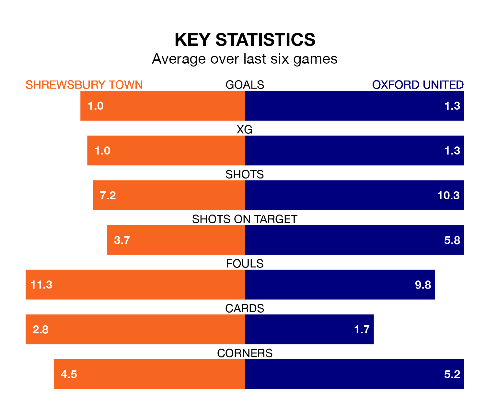

Shrewsbury Town host Oxford United on Friday at the Croud Meadow in EFL League One.
In their last league match, on March 16, Shrewsbury beat Carlisle United 1-0 at home, with their goal scored by Daniel Udoh.
Oxford also won, 2-0 away at Port Vale, with Ciaron Brown and Josh Murphy on the scoresheet.
With 29 goals in 39 games so far this season, Shrewsbury are the league's lowest scorers with 0.7 goals per game. And they are conceding more than average, letting in 55 goals at a rate of 1.4 per game.
Oxford, meanwhile, are above average scorers, with 1.6 goals per game, compared to a league average of 1.3. They have conceded 1.3 goals per game.
In the last 10 years, Shrewsbury and Oxford have played each other on 15 occasions. Shrewsbury won three of them, Oxford nine, and they drew three times.
On average, the Shrews scored 1.1 goals and the Us 1.9 in those matches.
Their last meeting was on October 3, when Oxford won 3-0 at home.
United are sixth in the table after 39 games, of which they have won 18 and drawn nine, earning 63 points.
Town are 12 places behind the Us in 18th, with 13 wins and five draws putting them on 44 points.
The Shrews are in mixed form in EFL League One, with three wins and three losses from their last six games.
With two wins and a draw over that period, the away team's form is slightly worse – they have taken seven points from 18, compared to the hosts' nine.
Updated: 10:19 (UTC), 22/03/24